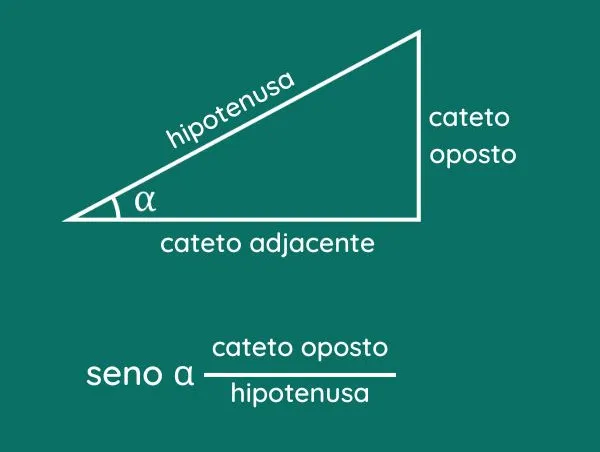
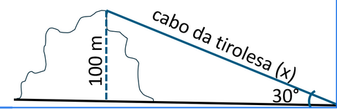
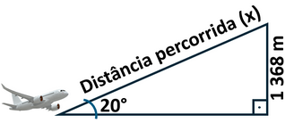
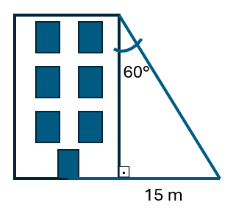

Define-se o seno de um ângulo agudo como a razão entre o cateto oposto e a hipotenusa.

Uma tirolesa será feita em uma montanha que possui 100 metros de altura. Sabendo que ela será amarrada de tal modo que forme com o chão um
ângulo de 30°, qual deve ser o tamanho do cabo da tirolesa? (use sen 30° = 0,5).

Um avião levantou voo, formando um ângulo de 20° com o solo, e atingiu uma altura de 1368 metros. A distância percorrida pelo avião,
em metros, foi de:
(Use: sen 20º = 0,342)

Uma rampa lisa com 10 m de comprimento faz ângulo de 15º com o plano horizontal. Uma pessoa que sobe a rampa inteira eleva – se verticalmente a
quantos metros?(Use: sen 15° = 0,26)
A diagonal de um retângulo forma com o maior lado desse retângulo um ângulo de 18°. Se a diagonal mede 10 cm, a medida do
menor lado desse retângulo é de: (Use: sen 18° = 0,32)
Uma corda é inclinada 60° em relação à parede de um edifício conforme o desenho. Ao chegar ao chão, ela está afastada 15 m da base do mesmo edifício.
Qual a medida aproximada da corda? (Use sen 60 = 0,866)

No triângulo retângulo a seguir, determine o valor do ângulo Θ, em graus, e seu seno?